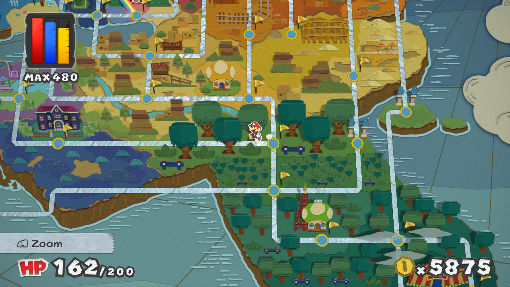
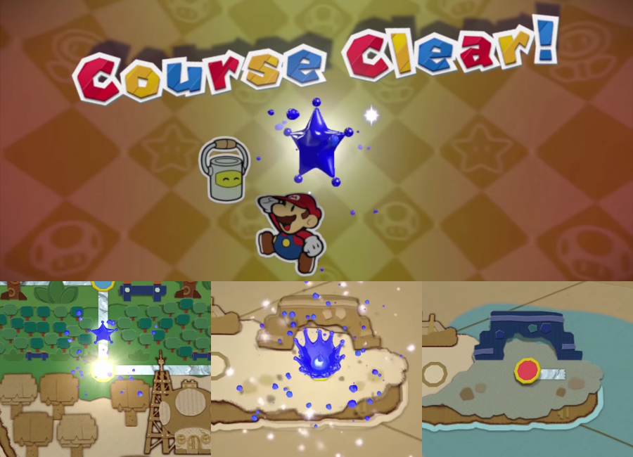
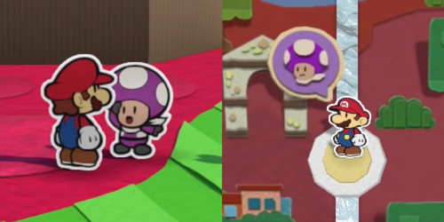
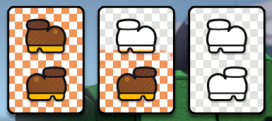
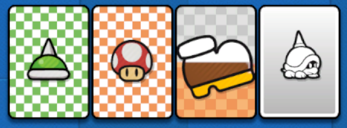
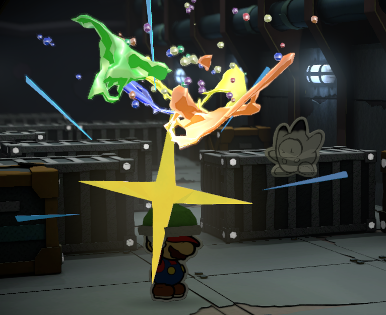
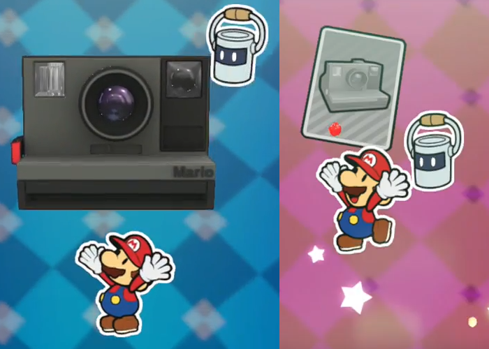
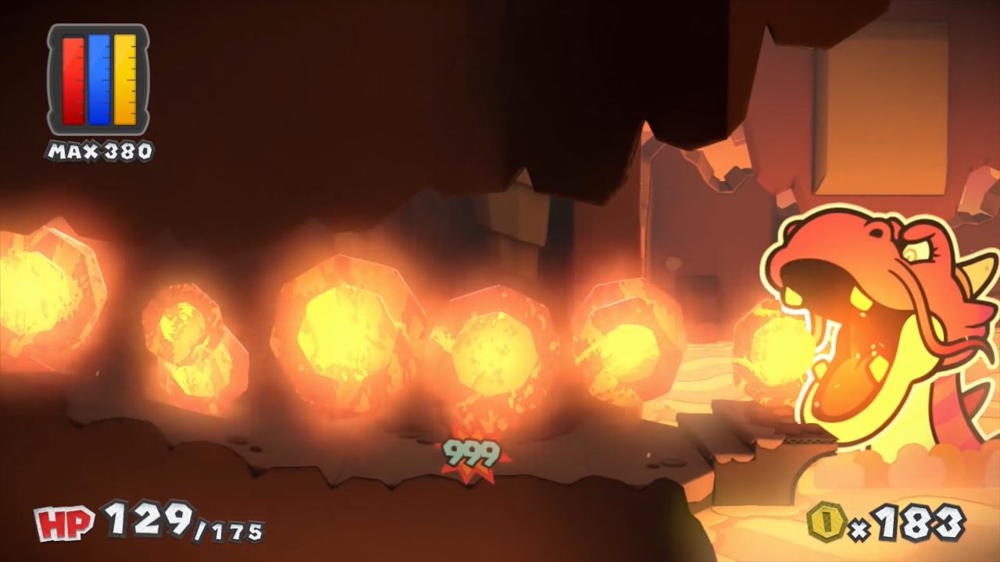

What is Color Splash?
Paper Mario: Color Splash is an action-adventure comedy video game released for the Wii U in 2016. The fifth installment in the Paper Mario sub-series, it was published by Nintendo and developed by Intelligent Systems. The player controls a 2D version of Mario around 3D levels and environments, while battles against enemies are turn-based. It has a unique art style that places a heavy emphasis on paper elements, some of which are important to gameplay.
My personal experience with this game is that I've completed it once in 2018, then again in 2020, although I have been interested in it since its release. Since then, Color Splash has received a (disappointing) follow-up titled The Origami King, which I beat twice in 2020.
Section links: Goals and Progression, Battle System, Art Style and Gameplay Influence, Soundtrack, What I'd Change, Conclusion. See a plaintext version here.
Goals and Progression
Color Splash takes around 30 hours to beat, with a bonus 10 hours added on to a completionist run. Many sources of hints and tips are available to the player to prevent them from getting stuck. Additionally, mechanics are added to ensure the player knows where they need to go next, and reminders are placed on levels with important objectives that have yet to be completed.
One of the game's major objectives are Mini Paint Stars. There are between one and three of these in every level, with most being awarded at the end. When Mario collects one, a celebratory fanfare plays as the game goes back to the world map. The Mini Paint Star appears, flies off into an inaccessible area, and creates a small splash of color around it, as a trail is then drawn to the level Mario collected it in. The level's icon is also colored red, until Mario has visited it, at which point it turns blue.
A good example of the game's reminders is with the Rescue Squads, five groups of Toads distinguished by color. Each member is found in a separate area. Mario can return to the hub level at any time to learn how many squad members are left and their individual locations, including if they are in an area he cannot access yet. Early in the game, Mario meets Rescue Purple, who instructs him to find his three squad members. An icon of Rescue Purple's face is then placed over the level, disappearing once Mario collects the Mini Paint Star that the squad helps him reach.
Battle System
Color Splash follows a similar style of battles to its predecessor, Sticker Star. When Mario collides with an enemy on the overworld, he enters a turn-based battle. Here, Mario can play cards (from a deck of up to 99) that determine his attacks. For example, one card allows him to jump on an enemy 10 times, while another lets him throw fireballs. Cards are disposable, and can either be bought in the hub world, found from exploring, or dropped from enemy battles. Most cards are found colorless, and paint (a finite resource) can be used to make them more powerful. Some cards require more paint than others, depending on their strength. Mario earns paint from environmental objects and defeating enemies.
If Mario is running out of cards, he can either flee from battle, or play the Battle Spin for 10 coins. This is a minigame involving a spinning roulette of cards, which are specialized based on the enemy he is fighting; multi-hit attacks appear more commonly against stacked enemies, while ice-based cards can be earned while fighting fire enemies.
Each battle contains between 1 and 8 enemies. They attack after Mario's turn, and may either damage him directly, drain his paint, or buff other enemies. Rather than a numerical system, enemies' health is portrayed by the amount of color left on their body; when defeated, they turn blank and disappear.
Another element of battles are Mario's Action Commands. When playing a card, if the A button is pressed at the right time, more damage is dealt. Some attacks have up to 10 Action Commands to maximize their effects. Additionally, during the enemies' turn, Mario takes less damage by pressing the A button right before the enemy attacks.
Spike Helmet, Mushroom, Big Jump, Spike Top.
Instant feedback is provided through sound effects and graphics; a successful Jump attack results in the text "Excellent!" displayed as paint flies off the enemy and purple action lines appear around the edge of the screen. A sound effect plays to signify a successful Action Command or block, and paint is seen draining from the card as the attack plays out.
Art Style and Gameplay Influence
Color Splash's graphic style is very similar to Sticker Star. However, while Sticker Star features smooth animations, slight gradiant shading, and characters being separated into individually-moving parts, Color Splash goes for choppier animations and completely flat colors. This was likely done to accomodate the new paint theming. The characters appearing paper-thin is not just an art direction -- it's also in-universe, as characters are repainted, crumpled, and folded at various points. This comes into the gameplay with how Mario has the ability to put a coat of paint any NPC on the overworld, which is used at multiple points in the game.
As an example of how the gameplay and art style work together, one item Mario can find is the Unfurl Block. Hitting it temporarily changes his hammer to have a foil texture, and hammering certain solid objects causes them to unfold, forming ramps, stairs, or bridges. Other items include the ? Block, which releases a card if Mario hits it (the block is shown to have its lid flip off as if it was made of cardboard), 1-Up Mushrooms that refill all of Mario's paint, and hearts that can restore his HP.
Collectible objects known as "Things" are regular, everyday objects that are seen as strange by the paper characters. For comedic purposes, either the objects are personified, or their effects are exaggerated. When Mario comes across one while exploring a level, he can collect it and turn it into a card. Thing Cards can be used in battle as super powerful attacks, or on the overworld for puzzles. For example, Mario uses the Fan to create a gust of wind for a boat to set sail, and the Magnifying Glass magically enlarges a small pipe.
Soundtrack
Color Splash features a soundtrack of 142 songs. Each track is designed to fit the mood of where it plays, and many different instruments and genres are used throughout the game. Here's a selection of six tracks I like that show off the game's variety. (I wanted to do more, but I think this is enough.)
Note: Audio is ripped directly from the game files and converted to MP3 format. Each track has had its volume amplified by about 10%. Fade-in and fade-out have been applied to certain tracks. In accordance with fair use, each track is less than 30 seconds.
What I'd Change
If I were to change one aspect of Color Splash, I would massively nerf the rock-paper-scissors minigame that can be played between levels. It gives out way too much money, to the point that I had the max amount of coins before even defeating the second boss. Your coins cap at 9999, and two games of rock-paper-scissors can easily give out over 1000 (you also know which card will be played depending on the opponent). I found myself easily able to buy powerful, pre-painted cards that I would save for required battles, eliminating the need to battle regular enemies for paint.
Additionally, I think the battles could've been improved by restricting the amount of cards Mario can carry. His deck stays at a capacity of 99 for the entire game. In the predecessor, Sticker Star, a new page with 18 sticker spots is added to the album after every major boss. Additionally, more powerful and expensive stickers take up more spots in the album, encouraging the collection of both hard-hitting attacks and weaker ones. Every card in Color Splash takes up the same amount of space, despite some clearly having more value than others.
I also found the Thing mechanics handled worse than in Sticker Star. In this game, every boss must be defeated using a Thing, which eliminates a lot of potential stategy and difficulty. Thing puzzles on the overworld are also dependent on solely one item, unlike in Sticker Star, which would let you use multiple solutions. This feels unnecessarily strict, leading to situations where an obvious and sensible solution won't work for no apparent reason. For example, when Mario discovers a giant block of ice in the freezer of a restaurant, he needs a Thing to shatter it. Out of the 20 or so items you have now, the most appropriate one seems to be an ice pick; this is incorrect, and the real answer is silly and unrealistic. Other Thing puzzles that flat-out doesn't make sense involve bringing a bottle opener to a volcano or balloons to a military base. I ended up using a walkthrough as a precaution before each level to make sure I had whatever random, illogical object I would need.
a specific arbitrary object on-hand.
The solution: Drop a basin on the dragon's head.
The game falls apart in the last chapter, where Mario searches for the green Big Paint Star. As with the others, you'll be sent running all over the map to explore, but previous sections had a clear goal in mind -- helping a steam train get back on track, an ocean voyage to a faraway island, or finding a Toad's lost pet. This one feels aimless and mostly consists of tying up loose ends, some of which were established half the game ago. The funny, casual, and sometimes surprisingly moving character writing is also absent; in this chapter, the levels are mostly reliant on dull platforming and battles against enemies with way too much health. I particularly disliked the forest level that's a straight run between circus-themed enemies, which you have to do three times for no reason. Even the lead-up to the boss fight feels non-existent, in that the chapter's boss level is exactly two screens long and consists of nothing but a mini-boss rush.
Conclusion
Overall, I really enjoyed analyzing Color Splash. It tends to be overlooked due to following the massively unpopular Sticker Star and releasing at the very end of the Wii U's life cycle (itself a badly-recieved console). There are a few connections that I didn't make until I thought about them for this essay. My personal favorite part of this analysis was choosing preview screenshots for the music tracks. I do still like Color Splash, and if you can tolerate its flaws, give it a try.
Attribution for the sprites and music go to Nintendo. I do not own these assets and am using them here for illustrative purposes. I ripped these from the game files. The battle and world map screenshots are from my own gameplay, but the rest are from ZackScottGames' playthrough on YouTube. I would've went with the Mario Party Legacy videos, but the coloring on those is messed up. This retrospective was written by Antonio Didjusto in June of 2021.